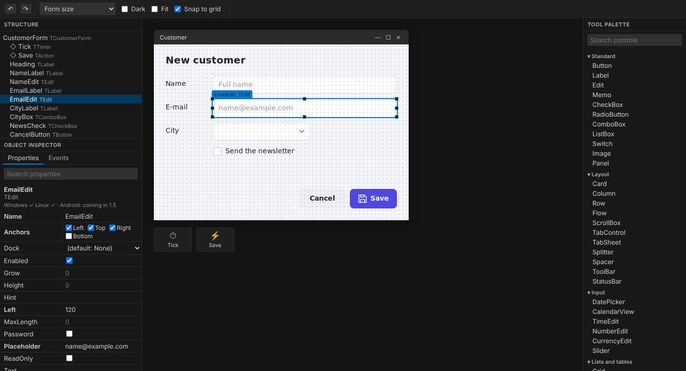

#Forms and controls
A Pastel window is a form. Each form has two files in src/forms/:
| File | What it contains |
|---|---|
Home.pform |
The layout: which controls exist and their properties |
Home.pas |
The code: event handlers and logic |
When you build, Pastel generates a third unit, Home.g, with a THomeFormBase class that has a field for every control in the .pform file. Your form class inherits from it, so you can use NameEdit.Text directly. You never edit the generated file; it lives in build/.
unit Home;
{$mode objfpc}{$H+}
interface
uses SysUtils, Pastel.UI, Home.g;
type
THomeForm = class(THomeFormBase)
procedure SendClick(Sender: TObject);
end;
var
HomeForm: THomeForm;
implementation
procedure THomeForm.SendClick(Sender: TObject);
begin
Greeting.Text := 'Hello, ' + NameEdit.Text;
end;
end.
#The .pform format
object HomeForm: THomeForm
Title = 'My app'
Width = 460
object NameEdit: TEdit
Placeholder = 'Your name'
end
object SendButton: TButton
Text = 'Send'
OnClick = SendClick
end
end
object Name: TType...endcreates a control. Objects inside another object become its children.- Text values use single quotes:
'It''s fine'(two quotes for one). - Numbers:
Width = 200,Gap = -2. True/Falsefor yes/no properties.- Choices can be written short:
Align = Centeris the same asAlign = aiCenter. - Sets are in brackets:
Anchors = [Left, Top, Right]. - Colors are text:
Color = '#4F46E5'(also#RGBand#AARRGGBB). - Events name a method of your form class:
OnClick = SendClick. The method must be declared in the class:procedure SendClick(Sender: TObject); - Comments:
// to the end of the lineand{ like this }.
#The window
Window settings are properties of the form:
| Property | Default | |
|---|---|---|
Title |
'Pastel' |
Window title |
Width, Height |
480 × 360 | Size when the window opens |
MinWidth, MinHeight |
200 × 120 | Smallest size the user can resize to |
Resizable |
True |
False: fixed size, no maximize |
WindowState |
Normal |
Maximized, Minimized or FullScreen when the window opens |
AlwaysOnTop |
False |
Keep the window above other windows |
From code: Maximize, Minimize, Restore, Close, or set WindowState and Resizable while the app runs. WindowState also tells you what the user did (for example wsMaximized after they maximized the window).
Window events:
// OnCloseQuery = HomeCloseQuery: runs when the user closes the window or Close is called
procedure THomeForm.HomeCloseQuery(Sender: TObject; var CanClose: Boolean);
begin
CanClose := not FHasUnsavedChanges;
end;
OnClose runs when the window really closes, OnResize after the size changed. The minimize, maximize and close buttons in the title bar are drawn by the operating system, so they always match the platform.
#The app's icon
assets/icon.png is the app's icon everywhere: pastel new app puts Pastel's there, to be replaced by a square PNG of your own (512 × 512 is best). In VS Code: Pastel: Set App Icon… (also in the Pastel side bar, and on a .png in the Explorer's right-click menu).
| Where | How the icon gets there |
|---|---|
| The window and the taskbar (Linux, Windows) | the program sets it when it opens its window |
The .exe in Explorer (Windows) |
built into the .exe by pastel build --target windows |
| The menu and the dock (Linux) | the .desktop file of pastel package deb and of the AppImage; installed, the dock shows it (a program run straight from build/ has no menu entry, so GNOME's dock may show a plain icon for it) |
| The Windows installer | pastel package installer |
| The phone's home screen | pastel package apk, in Android's five sizes (android.md) |
#Designing in VS Code

With the Pastel extension, open a .pform file and press the designer button in the editor title. It is laid out like Delphi's IDE: Structure and the Object Inspector (with Properties and Events tabs and a search box) on the left, the form in a window frame in the middle, the Tool Palette (grouped, with a search box) on the right; timers, actions and other non-visual components sit in a tray under the form.
A form made before Pastel 1.4 stacks its controls (Layout = Flow), so they move only up and down; the designer then shows Place freely, which turns it into Layout = Free with every control kept where it is now. The ⇱ Place freely button under a selected row, column or card does the same for that container.
Hovering over a control in the palette shows where it works (Windows ✓ Linux ✓, and whether it will be on Android); the inspector shows the same under the control's class. A menu bar, a splitter and a status bar are desktop only.
In a form or panel with Layout = Free:
- drop a control from the palette where it should be; it snaps to an 8 pixel grid (Snap to grid; hold
Altto place it freely) - drag controls to move them — also into a panel — and pull the eight grips to resize them; the position and size are shown at the top right
- snap lines: an edge or the middle of a control near the same of a neighbour snaps to it, and a purple line shows it (they win over the grid;
Altturns both off) Ctrl+arrowsmove the selection by one pixel,Shift+arrowschange its size- select several (
Ctrl+click) to move them together, or line them up with the align buttons at the top (left, right, top, bottom edges, same width, same height — the control clicked last is the model) - double-click an event in the inspector to write its handler, like in Delphi
In a Flow container:
- click a control to select it; the editor jumps to its line, and moving the cursor in the editor selects it in the designer
- change properties in the panel on the right; the → button next to an event opens its code, or creates the handler if it does not exist yet
- drag controls to move them: the orange line shows where the control will go (between other controls, or into a row, column or card); the right and bottom grips give a control a fixed
WidthandHeight
Everywhere:
- drag new controls in from the toolbox, or click one to add it after the selected control
Deleteremoves the selected control;Ctrl+C,Ctrl+X,Ctrl+VandCtrl+D(duplicate) copy controls, with new names when a name is takenF2or the Name row at the top of the properties panel renames a control, and the form's.pascode is renamed with it- a property the
.pformdoes not set shows its default (EnabledandVisibleare ticked,Stylesays (default: Primary)); choosing the default again removes the line from the.pform BackgroundImageand theFileNameof a picture offer the pictures inassets/Ctrl+Z/Ctrl+Yundo and redo designer changes (every change is also an ordinary edit of the.pformtext)- the size box shows the form at phone, tablet and desktop sizes; Dark shows it in the dark theme
Ctrl+clickselects several controls: change a property of all of them at once (Style = Secondaryfor three buttons), delete, copy or cut them together- ⊞ Panel, ⊞ Row, ⊞ Column and ⊞ Card put the selected controls into a new container; Unwrap takes them out again
Alt+Up/Alt+Down(or the ↑ ↓ buttons) move a control before or after its neighbour;Escapeselects the container it is in- Structure under the properties lists every object, also timers, actions, data bindings and other components that are not drawn
- what
pastel checkfinds is outlined on the form (a row whose controls are cut off, an unknown property) and listed under it
Controls of your own (pastel new control StarRating, in src/controls/) are in the toolbox too, at the front in italics.
Pastel: New Form… (or the New Form button in the Pastel sidebar, or pastel new form Settings in a terminal) creates Settings.pform and Settings.pas with OK and Cancel buttons, and adds the form to main.pas.
#Hot reload
pastel run builds a debug version that reads the .pform file from disk. While the app is running, save the .pform file and the window updates right away. If the file has a mistake, a red bar explains it and the last working layout stays visible. Text typed into edits, checked boxes, selected items, slider positions and the open tab are kept across a reload.
What needs a restart: changes to .pas code, and new event handlers.
#Layout
A form (and every container) places its children in one of two ways, chosen with Layout:
Layout = Free— like Delphi and Lazarus: every control stays where you put it (Left,Top) at its own size. New forms are made this way, and so is aTPanel.Layout = Flow(the default whenLayoutis not written) — the responsive way: children below each other in a column, side by side in a row, and they follow the window's size.
The two mix: a free form can hold a TRow of buttons, and a column can hold a TPanel with free-placed controls.
#Free placement
object LoginForm: TLoginForm
Width = 420
Height = 260
Layout = Free
object NameEdit: TEdit
Left = 24
Top = 24
Width = 372
Anchors = [Left, Top, Right] // gets wider with the window
end
object OkButton: TButton
Left = 312
Top = 208
Width = 84
Anchors = [Right, Bottom] // stays in the bottom right corner
Text = 'OK'
end
object Bar: TStatusBar
Dock = Bottom // Delphi's Align = alBottom
end
end
| Property | |
|---|---|
Left, Top |
The place in the parent, in pixels from its top left corner |
Width, Height |
The size; 0 is the control's natural size (a button as wide as its text) |
Anchors |
The edges that keep their distance to the parent's edges when the window is resized: [Left, Top] (default) stays put, [Left, Top, Right] gets wider, [Right, Bottom] moves with the corner. The design size is the parent's Width and Height |
Dock |
Delphi's Align: Top, Bottom, Left, Right take that edge of the parent (in order); Fill takes what is left |
In a free form Padding is 0, so Left = 0 is the very edge; docked controls keep Padding away from the edges when it is set. Controls drawn later are on top; the designer's ↑ ↓ buttons change that order.
#Flow
Containers with Layout = Flow place their children one after another:
TColumnstacks children top to bottom;TRowplaces them left to right. The form itself is a column.Gap: space between children.Padding: space inside the edges.Align(across the stacking direction):Stretch(default for columns),Start,Center(default for rows),End.Justify(along the stacking direction):Start,Center,End,SpaceBetween.Grow: a child withGrow = 1takes the free space;Grow = 2takes twice as much asGrow = 1.Width/Height: fixed size in pixels;0(the default) means "as big as the content".- When a row is too narrow, its growing children (
Grow) give up width, down to 48 pixels. If the controls still do not fit, the last ones are cut off;pastel check(and the editor) warns about such rows at the form's size.
#Phones, tablets, TVs and windows of every size
A form is drawn at the screen's real size: Width and Height in the .pform are only its size in the designer. Sizes are not the screen's pixels but layout units, like Android's dp: a 48 high button is about as big on a 6-inch phone, a tablet, a TV and a computer monitor. So most forms fit everywhere when they are built for it:
- Flow (
Layout = Flow): the controls stack and take the width — on a phone and on a TV alike. - Free placement:
Anchors = [akLeft, akTop, akRight]keeps a control as wide as its container,Dockputs it at an edge. MaxContentWidthon the form (or any container): the controls use at most that width, in the middle. On a tablet, a TV or a wide window the lines stay readable instead of running across the whole screen.
object HomeForm: THomeForm
Padding = 16
MaxContentWidth = 600
...
end
A phone app's usual parts are controls too: tabs at the bottom (TTabControl with TabPosition = tpBottom), a
menu that slides in from the side (TDrawer), a sheet from the bottom
(TBottomSheet), lists pulled down to refresh (OnRefresh of
TListView), short messages (ShowToast).
#The kind of screen
ScreenClass says what the app is on: scPhone, scTablet (the shorter side 600 or more), scTV (Android TV, TV boxes) or scDesktop. A computer's window narrower than 600 counts as a phone, so phone layouts can be tried by making the window narrow. OnScreenClassChange runs when the form first shows and whenever the kind changes (a phone's split screen, a window made narrow):
procedure THomeForm.ScreenClassChange(Sender: TObject);
begin
DetailsBox.Visible := ScreenClass <> scPhone; { the details beside the list on tablets }
ListBox.Grow := Ord(ScreenClass = scPhone);
end;
PASTEL_SCREEN=phone|tablet|tv|desktop pastel run shows the app as on that kind of screen.
#Views: a form for each kind of screen
Like FireMonkey's views, a form can have a view for a kind of screen: Home.tablet.pform next to Home.pform (also phone, tv, desktop). A view only says what is different — sizes, places, padding, fonts, texts, Visible. The controls and their events stay in the form itself, so the code is the same for all screens.
// Home.tablet.pform: the Home form on tablets (and TVs without a view of their own)
object HomeForm: THomeForm
Padding = 32
MaxContentWidth = 700
object Heading: TLabel
FontSize = 34
end
object DetailsBox: TCard
Visible = True
end
end
When the app starts, and when the kind of screen changes, Pastel applies the view (a TV uses the tablet's view when it has none of its own); values the view changed go back to the form's when another kind of screen has no view. pastel build and pastel check make sure a view has only controls of its form, of the same types, and no events.
In the designer, the box at the top left chooses All screens (the form) or a view (• marks those that exist). With a view chosen, the designer shows the form with the view's values, at that screen's size, and everything you change — moving, resizing, the Object Inspector — goes into the view's file (made when you change the first thing). Controls are added, removed and renamed with All screens chosen.
#Text size and the remote
- Text size: on Android, the text size chosen in the phone's settings makes all text larger (up to 1.3 times, so forms keep their shape).
- A TV's remote (and arrow keys on a phone): the arrows move the focus to the nearest control in that direction, the focused control has a clear ring, OK presses a button, ticks a check box and brings the keyboard for an edit. Controls that use the arrows themselves (lists, edits, sliders) keep them. On a computer,
PASTEL_SCREEN=tvturns it on.
#Controls
All controls have Width, Height, Grow, Visible, Enabled, Hint (a tooltip) and PopupMenu (a right-click menu). Every control with a .pform and a code example: controls.md. Your own controls: components.md.
| Control | Properties | Events |
|---|---|---|
TForm |
Title, window properties (see above), Padding (24), Gap (12), Color, Appearance (Light, Dark, System) and the column properties |
OnCreate, OnCloseQuery, OnClose, OnResize |
TColumn, TRow |
Gap, Padding, Align, Justify, Color, Radius, BorderColor, BorderWidth |
|
TCard |
Like TColumn, with a background, border, rounded corners and padding |
|
TScrollBox |
A column that scrolls when its content is taller than it | |
TTabControl, TTabSheet |
Pages with tabs: TabIndex; a sheet has a Caption |
OnChange |
TSpacer |
Empty space with Grow = 1 |
|
TLabel |
Text, FontSize (14), Bold, Color, TextAlign (Left, Center, Right), WordWrap |
|
TButton |
Text, Icon ('save', 'add'...), Style (Primary, Secondary, Danger, Flat), Action, ModalResult, Default, Cancel |
OnClick |
TEdit |
Text, Placeholder, Password, ReadOnly, MaxLength |
OnChange, OnSubmit (Enter key) |
TMemo |
Several lines: Text, Lines, WordWrap, Placeholder, ReadOnly |
OnChange |
TCheckBox, TSwitch, TRadioButton |
Text, Checked; radio buttons with the same parent are one group |
OnChange |
TComboBox |
A drop-down list: Items = ('A', 'B'), ItemIndex, Text, Placeholder |
OnChange |
TListBox |
Items, ItemIndex, ItemHeight; only the visible rows are drawn, so long lists stay fast |
OnChange, OnDblClick |
TImage |
FileName (from assets/), Fit (Contain, Cover, Stretch, Center) |
|
TProgressBar |
Position, Max, Indeterminate |
|
TSlider |
Position, Min, Max, Step |
OnChange |
TSpinner |
Active |
|
TFlow |
A row that wraps into more lines: tags, buttons, small cards; Gap |
|
TSplitter |
Between two controls of a row or column; dragging it changes the Width/Height of the one before it; MinSize |
OnMoved |
TToolBar, TStatusBar |
Rows at the top and bottom of a form: flat buttons (Style = Flat); Text or labels |
|
TDatePicker, TCalendarView |
A date: DateText = '2026-11-01', Placeholder; Date, HasDate, Clear from code |
OnChange, OnPick |
TTimeEdit, TNumberEdit, TCurrencyEdit |
A time (Step minutes), a whole number (Min, Max, Step, Value), an amount (Symbol, Decimals, Value) — controls.md |
OnChange |
TGrid, TListView |
A table: TGridColumn children (Title, Field, Width, Kind = Money/Date/Check...), Editable, Sortable; LoadJson, Filter, ToCsv from code |
OnChange, OnDblClick, OnCellEdit |
TTreeView |
A tree: Items = ('Documents', ' Letters') |
OnChange, OnDblClick |
TDataBinding |
Fills edits from a record and back: Fields = ('NameEdit', 'EmailEdit') |
|
TMenuBar, TMenuItem, TPopupMenu |
Menus: Caption ('-' is a line), ShortCut = 'Ctrl+S', Checked, Action; items inside items are submenus |
OnClick |
TAction |
One command for a menu item and a button: Caption, ShortCut, Enabled, Checked |
OnExecute |
TTimer |
Interval (ms), Enabled |
OnTimer |
Keyboard: Tab / Shift+Tab move the focus, Enter or Space presses a focused button, Enter in a dialog presses its Default button and Escape its Cancel button, F10 or Alt opens the menu bar, the Menu key or Shift+F10 opens a control's popup menu. In edits: selection with the mouse and Shift, Ctrl+A, Ctrl+C/X/V, Ctrl+Z/Y, word moves with Ctrl.
#Windows of their own
Form.Show opens a form beside the main window (computers; again: brings it to the front); Close, a button
with a ModalResult, or the window's close button closes it (OnCloseQuery asks first). Showing is true
while it is open. Phones have one window: Show shows the form over the main one, as ShowModal(nil).
procedure THomeForm.CustomersClick(Sender: TObject);
begin
CustomersForm.Show; // a list to keep open next to the main window
end;
#Animations
Pastel.Animate moves any number property (Width, Height, Left, Top, Position...) or color to a new
value smoothly:
Animate(DetailsPanel, 'Height', 240); // 250 ms, slowing down at the end
Animate(Card, 'Left', 0, 400, eaOutBack); // a little past, then back
AnimateColor(SaveButton, 'Color', $FF43A047, 300, eaLinear, @Saved);
Easings: eaLinear, eaInQuad, eaOutQuad, eaInOutQuad, eaOutCubic, eaInOutCubic, eaOutBack,
eaOutBounce, eaOutElastic. StopAnimations(Control), IsAnimating; Repeating and Reverse on the
TAnimation it gives. A new animation of a property goes on from where it is; a freed control takes its own.
#Gestures
Two fingers pinching or turning (Ctrl and the mouse wheel on a computer) go to the control under them:
OnGesture (Scale: how much bigger since the last call, Rotation in radians, the middle X, Y,
State: gsBegin, gsUpdate, gsEnd). TMapView zooms with it.
procedure THomeForm.PhotoGesture(Sender: TObject; const Gesture: TGestureInfo; var Handled: Boolean);
begin
PhotoZoom := EnsureRange(PhotoZoom * Gesture.Scale, 1, 8);
Photo.Invalidate;
Handled := True;
end;
#Drag and drop
DragMode = dmAutomatic: pressing a control and moving drags it (a finger too) onto a control with
OnDragDrop. A list carries its selected item's text; OnStartDrag sets what is carried (an id) or cancels.
object Tasks: TListBox
DragMode = dmAutomatic
end
object DoneColumn: TColumn
OnDragOver = DoneDragOver // Accept := False refuses it
OnDragDrop = DoneDragDrop
end
procedure THomeForm.DoneDragDrop(Sender, Source: TObject; const Data: string; X, Y: Integer);
begin
MarkDone(Data);
end;
OnEndDrag(Sender, Target, Data) on the dragged control: where it went (nil: nowhere). Form.BeginDrag(C, Data)
starts one from code.
#Screen readers
On Android TalkBack reads Pastel's controls — their kind, text, checked or not — and a double tap clicks them;
nothing to do in the app. A control whose text does not say what it does gets an AccessibleName
(AccessibleName = 'Delete the appointment' on an icon button). Computers: Narrator and Orca are not reached yet.
#Testing a form without a window
Apps can run a script of UI actions and quit, which is useful for tests and CI:
type NameEdit Ayşe
click SendButton
expect Greeting Hello, Ayşe
shot screenshot.png
PASTEL_HEADLESS=1 PASTEL_TEST_SCRIPT=ui.txt ./build/linux/debug/myapp
Commands:
click <name> [x y],doubleclick,rightclick,hover <name>,wheel <name> <dy>,drag <name> <dx> <dy>(press in its middle, move, let go: splitters, sliders) – menu items and tab sheets can be clicked by name tootype <name> <text>–\npresses Enterdrop <name> <file> [<file>...]– files dropped on it from the file manager (OnDropFiles);Frame.Controlnames a control in a framekey ctrl+a,key shift+down,key f10,key enter|tab|escape|backspace|delete|up|down|left|right|home|end|spaceexpect <name> <text>checks the text;expect <name>.<property> <value>any property (expect Agree.Checked True,expect HomeForm.Title Notes)set <name>.<property> <value>sets a property like a.pformline does (set DueDate.DateText 2026-11-01)wait <ms>(lets timers and threads run),print <name>,resize <w> <h>,shot <file.png>,reload,close,quit
Dialogs are scripted like everything else: the lines after the one that opened a dialog act on it (click YesButton, type FileNameEdit notes.txt\n). The exit code is 1 if an expect fails. PASTEL_HEADLESS=1 draws into memory without opening a window, so no display is needed; PASTEL_SCALE=2 draws at double size and PASTEL_THEME=dark in the dark theme.